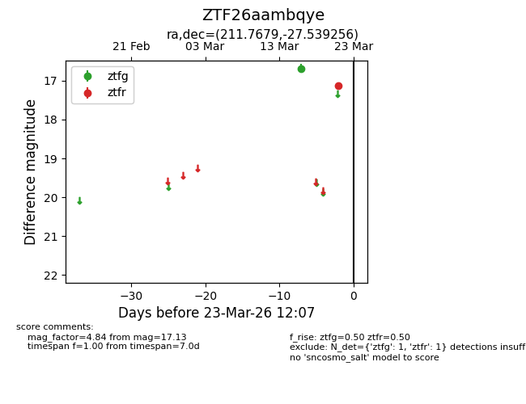
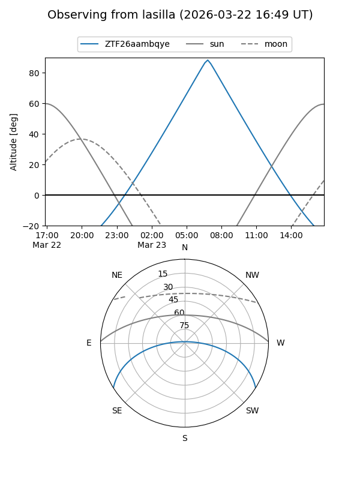
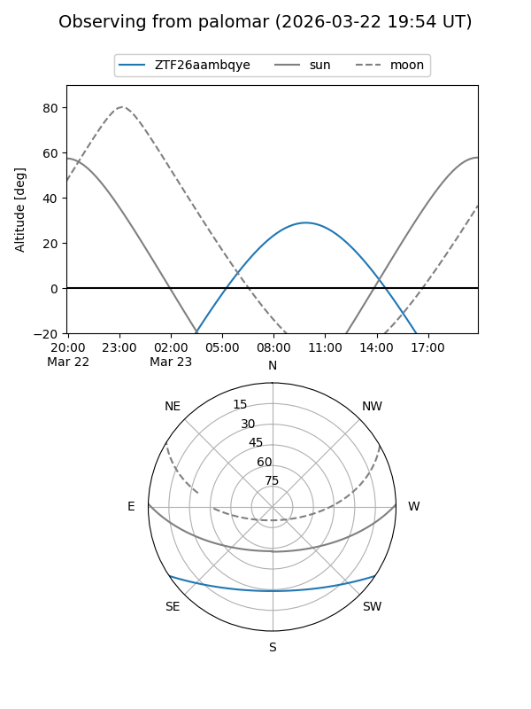

ZTF26aambqye
Target ZTF26aambqye at 2026-03-23 12:09
Aliases and brokers:
FINK: link
Lasair: link
ALeRCE: link
alt names
ZTF26aambqye (ztf,fink_ztf)
Coordinates:
equatorial (ra, dec) = 211.7679,-27.53926
equatorial (HMS+DMS) = 14:07:04.30,-27:32:21.32
galactic (l, b) = (322.8267,+32.39385)
Flags:
Photometry:
last ztfg=16.69, ztfr=17.13
1 ztfg, 1 ztfr detections
Lightcurve

Visibility


Additional plots